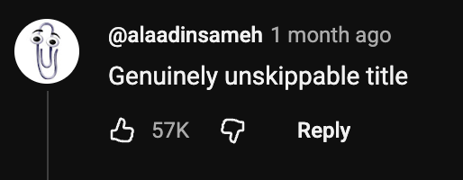

⚠ DO NOT WATCH ⚠
⚠ DO NOT WATCH ⚠
This is one of the most horrific things I've seen in the last 47 years. This 24 second clip, which I beg you not to watch unless you wish to hand your mind over freely to the horse menace, is corrupting our youth, government, and even lowering our property values.
First, I will describe the video, so you don't have to watch it. A horse enters the scene as a man and his three dogs enjoy a quiet afternoon. A crow caws four times. Not once, not five times, exactly four. Why?
As the equine fiend tromps around, they feign a goofy look to lull the human and his dog compatriots into a sense of security. Unexpectedly, then the horse kicks a tree, then makes eye contact with the camera as if to say, "you can't stop me."
It's hard to watch beyond this point, because the man in this video is surely lost to the horses. After the devious look, the horse breaks wind twice as it runs away chased by the dogs. Two of the three dogs chase it out and never return.
Now let me tell you the truth.
This horse was an advance operative of the growing horse militia. Perhaps it was "owned" by the Filmer or perhaps it came from the wild, seemingly at random. What's obvious is this horse was drawn to the psychic power of this man and his three dogs.
Everyone knows that dogs and humans have a powerful psychic bond. Most dog walkers are paid to power up their psychic energies! However, horses and dogs have a strange relationship. Have you seen a dog meet a horse? There is almost always a sense of reverence or recognition. Dogs are unwilling to go against their human companions, but this connection to horses has proven a dangerous loophole.
Two farts, two dogs gone. Horses do not fart accidentally. Ancient scripts from the Mongol empire discuss how drinking horse milk gave them the power of horse farts which they used to destroy the will power of entire villages from up wind.
Perhaps more concerning is the tree. At first glance, the kick appears to have done no damage to the tree. However, a psychic analysis shows that this tree has been infected with equine resonance. It could take years or less than a day for the tree to become a psychic antenna, available to horses for miles around to communicate and coordinate movements.
It gets worse.
Fungi are highly psychic, and these trees are pines. It's common knowledge that pine trees rely heavily on a mycelial network. Do you see the obvious? The horses know this. That could be why this horse was sent to this location! Perhaps the human and his dogs were just a coincidence.
I apologize for such unfortunate news, but I'm afraid there's more. I'm sure some of you are reading this and having a good laugh. You are already lost. I cry each night as I read the comments on this YouTube video.



If you need more proof of the psychic power of this video:


This is the most damning confession of them all. The horse influence is now so complete, its victims no longer know they've succumbed. I don't have proof, but the CIA could be involved in this conspiracy.
Protect Yourself
Protect yourself and your dogs from the influence of horses. It can be appealing, even cute, to see a dog meet a horse, but consider the results: roving bands of neighing dogs, lack of interest in herding, increased fear response, entering your dreams, disinterest in dry foods other than grains.
This happened to one of my dogs, Bruno, just last year. He mostly stays in his crate, now. I can't trust him to go outside since the rancher moved in next door. He used to protect me in my dreams, and now I only dream of horse rides.
If you watched the video, hug your dogs while they remember you and please don't touch any trees for at least ten days.